TOTTO Way es el sistema de formación y operación de TOTTO. Convierte los procedimientos de la compañía en misiones claras, visuales y accionables, para que cualquier persona nueva entienda rápido y ejecute bien.
Este es el Capítulo 01 de 8. Vive en papel (esta versión) y vivirá también en la plataforma digital TOTTO Way. El contenido es el procedimiento oficial de la compañía: aquí no se resume el proceso, se hace fácil de seguir.
Regla de oro: la forma cambió, el proceso no. Cada paso, política y dato de contacto es el oficial del Manual de Usuario Comercial.
El capítulo se divide en 8 misiones. Cada una abre con lo que vas a lograr y cierra con un checkpoint.
Los procesos van numerados, en el orden exacto en que se ejecutan.
Cuando el proceso ocurre en una plataforma (ej. Geovictoria), verás la pantalla real del sistema, tal como la encontrarás tú.
Al cerrar cada misión, marca las casillas ☐ y suma sus puntos +100 XP en tu formación.
Este sello indica que hay un documento o enlace oficial para profundizar (en digital: un clic).
Las franjas amarillas marcan reglas que no admiten excepción. Léelas dos veces.
Las cajas negras cierran cada tema con la idea en una frase: lo que debes recordar aunque olvides el resto.
Para qué existe este manual, para quién es y cómo se usa.
Misión, visión, propósito, principios, himno y tono de marca.
Quién es quién en la operación comercial y qué le corresponde.
El sistema con el que gestionamos cada tienda. La misión más grande.
Cómo atendemos, qué prometemos y por dónde nos contactan.
Las reglas que nos protegen: ética, seguridad, datos y ciberseguridad.
Geovictoria paso a paso: turnos, asistencia, permisos y compensatorios.
Kits, reposiciones e higiene y presentación personal.
Si eres nuevo: léelo completo, en orden, durante tu inducción. Si ya estás operando: entra directo a la misión que necesitas — este manual es tu referencia de consulta permanente.
Este manual te da una guía clara, práctica y completa de los conocimientos, procesos y herramientas esenciales para desempeñar tu función de manera excepcional dentro del punto de venta.
En última instancia, este manual quiere ser el compañero indispensable de cada asesor: garantiza la excelencia operativa y el cumplimiento de los objetivos comerciales.
Estandarizar la ejecución de tareas en todas las tiendas.
Optimizar la experiencia del cliente.
Facilitar la incorporación de nuevos colaboradores.
Fomentar la mejora continua y el empoderamiento, con acceso fácil y rápido a la información relevante.
Tu herramienta de capacitación inicial: adáptate rápido al rol y a los procedimientos de la empresa.
Tu recurso de consulta constante: resuelve dudas, revisa procedimientos y refresca conocimientos.
Tu base para estructurar capacitaciones, evaluar el desempeño y asegurar los estándares de servicio y venta.
Tu garantía de uniformidad en la operación y calidad del servicio en todas las tiendas.
No es para leer una sola vez. Consúltalo ante cualquier duda sobre productos, procedimientos, políticas o herramientas.
Si eres nuevo: revísalo en profundidad como parte de tu proceso de inducción.
El manual se actualiza periódicamente con nuevos procesos y cambios. Revisa las secciones actualizadas para estar al día.
Ante situaciones complejas o poco comunes con clientes, es tu primera fuente de soluciones estandarizadas.
Contiene información de producto que puedes usar directamente en la interacción con el cliente.
¿Duda en el piso de venta? Primero el manual, después el jefe.
Aquí casi siempre está la respuesta estandarizada — y responder igual en todas las tiendas es lo que nos hace marca.
Impulsamos a las personas a moverse, crecer y vivir cada aventura al máximo.
Ser la marca que conecta con las historias de quienes no se detienen.
Impulsamos tus sueños, contigo siempre vamos.
¿LISTOS? ¡VAMOS!
Como asesor, no vendes morrales. Vendes acompañamiento, confianza y movimiento.
Creamos productos y experiencias que superan expectativas.
Somos el mejor lugar para trabajar, aprender y crecer.
Buscamos trascender fronteras con metas retadoras.
Apostamos por la transformación digital y la creación de valor.
Actuamos con respeto, diversidad y justicia.
Trabajamos por nuestra gente, nuestra comunidad y nuestro planeta.
calidad, funcionalidad, diseño.
confianza, seguridad, alegría.
Las Unidades de Negocio son la clasificación estratégica con la que desarrollamos productos exitosos.
Cuando un cliente te dice «busco algo para la universidad» o «viajo la próxima semana», te está diciendo en qué unidad de negocio está su vida hoy. Conocerlas te permite guiarlo al producto correcto en segundos.
Ropa · Kids
Maletines · Accesorios · Personalización
Kids · Maletines · Accesorios
Maletines · Travel
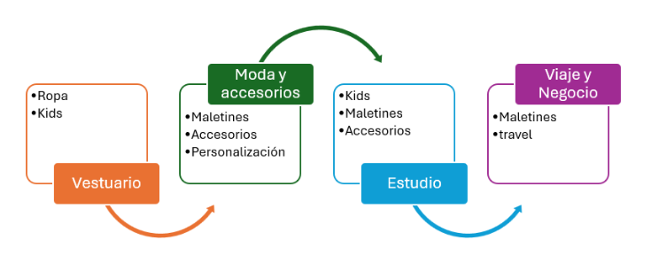
El himno se canta en convenciones, aperturas y celebraciones de equipo. No tienes que ser afinado: tienes que cantarlo con orgullo.
Porque siempre, siempre vamos
Conquistando el mundo unidos de la mano
Porque siempre, siempre vamos
Con nuestra gente
El mundo cambiamos
Deja tu huella en el camino
Deja una marca en tu destino
Persigue la luz que te lleva
Y que siempre marcará tu senda
Busca tu estilo
Busca un amigo
Que hoy y siempre
Vaya contigo
Busca un hermano
Que te dé la mano
En cada día de trabajo
Coro
Porque siempre, siempre vamos
Conquistando el mundo unidos de la mano
Porque siempre, siempre vamos
Con nuestra gente
El mundo cambiamos
CON TOTTO SIEMPRE VAMOS
El gran proyecto en nuestra vida
Es trabajar con alegría
Aventureros
Grandes pioneros
Las ilusiones cumpliremos
Coro
Porque siempre, siempre vamos
Conquistando el mundo unidos de la mano
Porque siempre, siempre vamos
Con nuestra gente
El mundo cambiamos
CON TOTTO SIEMPRE VAMOS
Nos encontramos en el camino
Vamos vibrando al mismo ritmo hoy
Comprometidos por ti seguimos
Viviendo TOTTO todo es pasión
Coro
Porque siempre, siempre vamos
Encontrando nuevas metas caminamos
Porque siempre, siempre vamos
Vamos llevando colores, el mundo creamos
Porque siempre, siempre vamos
Conquistando el mundo, unidos de la mano
Porque siempre, siempre vamos
Con nuestra gente
El mundo cambiamos
Inclusión y diversidad en el mercado laboral.
Nuestra genteEducación y deporte como ejes de transformación; abastecimiento responsable para fortalecer proveedores.
Eco-diseño con materiales sostenibles y modelo de economía circular.
Dona tu morral — Instructivo.pdfSomos movimiento, no una marca plana. Ten presente:
Debes saber: los beneficios funcionales reales, cuáles son los productos héroe de temporada y qué licencias están activas. Esta información se envía por Torre de Control.
Cada frase debe conectar con el momento de vida del cliente:
«Este morral está en promoción.»
«Este morral es ideal para tu primer día de universidad: cómodo, organizado y con espacio para tu portátil.»
Estos tres roles no están en la tienda todos los días, pero definen la estrategia, los recursos y el desarrollo del equipo.
Define e implementa la estrategia que impulsa la venta de los canales físicos, franquicias, distribuidores y otros aliados comerciales. Concerta y asegura el cumplimiento de los lineamientos operativos, genera sinergias entre equipos y procesos clave, y realiza seguimientos para cumplir los objetivos de rentabilidad y fortalecer la marca.
Gestiona y controla la operación comercial y administrativa de los puntos de venta asignados y aliados de negocio/terceros: coordina el equipo de trabajo, optimiza los recursos disponibles y propone planes de acción, para lograr los objetivos definidos por la Gerencia y el crecimiento del canal.
Socio estratégico en desarrollo humano y organizacional, a nivel nacional e internacional según aplique. Entiende el negocio, gestiona los requerimientos y despliega los modelos, programas y planes, contribuyendo al logro de los objetivos de la región y de los procesos a quienes asesora.
Tu línea directa de reporte en tienda: tu Líder de tienda y tu Jefe Comercial.
La operación 360° del punto de venta vive en estos tres roles. Uno de ellos eres tú.
Lidera, coordina, gestiona y controla los procesos y el personal asignado al punto de venta, para lograr efectividad en la operación 360° y en los diferentes flujos de trabajo. Garantiza una prestación de servicio integral al cliente, su satisfacción y el correcto cumplimiento de las políticas establecidas por la compañía.
Asesora y acompaña idónea e integralmente a los clientes en el punto de venta, impulsando la compra de productos y ejecutando los diferentes procesos asignados para la correcta ejecución de la operación 360°; presta un servicio integral y cumple las diferentes políticas establecidas por la compañía.
Ejecuta y asegura los procesos logísticos, operativos y comerciales del punto de venta, garantizando el cumplimiento de los procesos, normas y políticas de la compañía. Genera sinergia con los líderes y equipos comerciales, aportando al crecimiento de las ventas.
Líder = que todo funcione. Asesor = que el cliente viva la marca. Auxiliar = que el producto fluya.
Los tres comparten un mismo resultado: la tienda.
Es el sistema que organiza cómo gestionas tu tienda — para que el resultado no dependa de la improvisación, sino de decisiones basadas en datos y del estándar de la marca.
«La excelencia no ocurre por casualidad. Se construye con disciplina.»
El modelo no cambia lo que haces; organiza cómo lo haces. Te da claridad sobre:
Gestiona el resultado y el servicio. Cuando el producto encanta, el ambiente envuelve y el servicio conecta, la tienda se convierte en una extensión viva de lo que somos.
Gestiona el entorno y la experiencia visual. Vitrinas que inspiran, layouts que guían y una narrativa visual que proyecta el espíritu aspiracional de TOTTO en cada tienda.
Gestiona el producto y el surtido. Producto correcto, lugar preciso, momento ideal: una orquestación perfecta entre analítica, planeación y ejecución para que cada tienda venda más y mejor.
Ninguno funciona aislado. Si uno falla, impacta el resultado general de la tienda. Como líder, debes gestionar los tres de manera equilibrada.
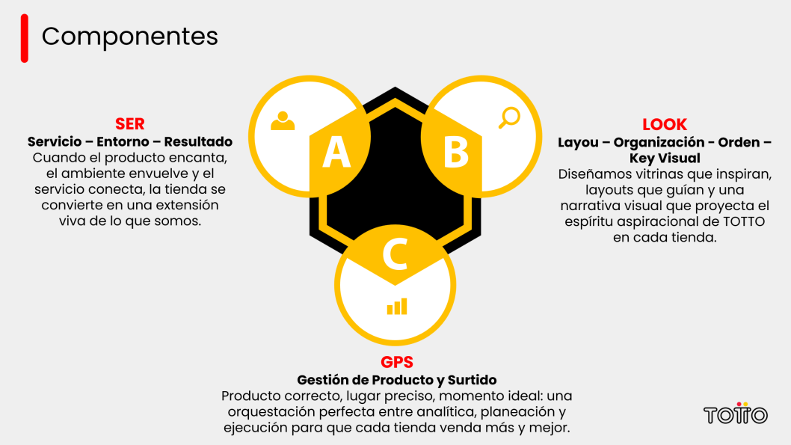
Cuando un componente se debilita, el impacto se refleja en los indicadores, en la experiencia del cliente y en la consistencia operativa. Tu rol es mantener el equilibrio y detectar a tiempo cuál requiere mayor foco:
Puedes tener buen producto (GPS), pero si el entorno no lo potencia (LOOK), pierdes oportunidad.
Puedes tener buena exhibición (LOOK), pero si el equipo no valoriza (SER), el ticket no crece.
Puedes tener buen equipo (SER), pero si el surtido no responde (GPS), el resultado se limita.
La excelencia ocurre cuando los tres están activos al mismo tiempo.
SER te permite gestionar el resultado comercial a través del servicio, la disciplina y el desarrollo del equipo. Aquí no solo revisas indicadores: conectas datos, comportamientos y experiencia del cliente para que la gestión tenga impacto real.
Es donde se activa el análisis, el acompañamiento y el entrenamiento del equipo: donde el resultado se convierte en gestión consciente.
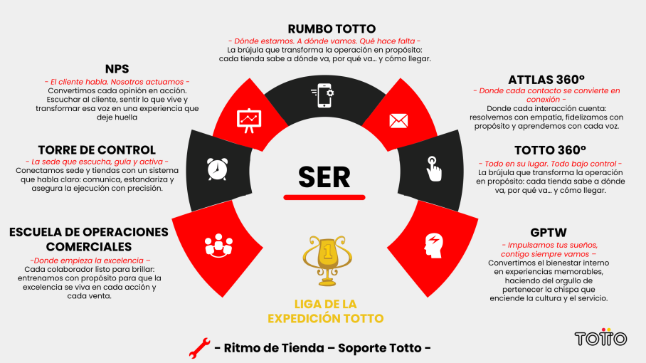
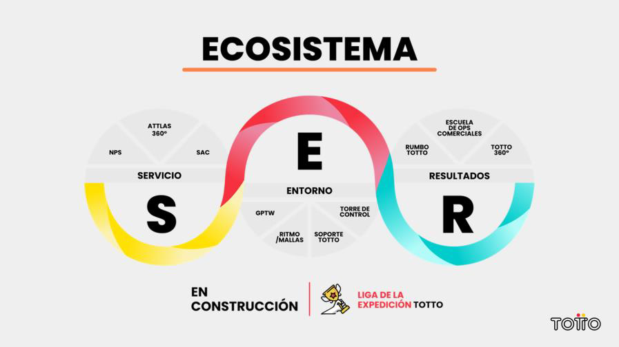
Rumbo TOTTO Avanza te da claridad de hacia dónde vas.
TOTTO 360° y Torre de Control te ayudan a validar y activar la ejecución.
NPS y Atlas 360° te permiten escuchar y entender al cliente.
GPTW sostiene la cultura interna.
Liga de la Expedición TOTTO impulsa el reconocimiento y la motivación.
Ritmo de Tienda – Soporte TOTTO asegura que la operación fluya.
Cuando todas están activas, el resultado deja de ser reactivo y se vuelve sostenible.
La brújula de gestión comercial: entiende dónde estás, hacia dónde vas y qué ajustar para llegar. Organiza el seguimiento diario, semanal y mensual de los indicadores.
La voz del cliente convertida en dato: escucha, entiende y actúa sobre la experiencia que están generando en tienda. No es solo una encuesta; es información para mejorar el servicio.
El ecosistema que integra datos, tecnología y experiencia del cliente y los convierte en inteligencia comercial: quién es tu cliente, cómo compra y cómo personalizar su experiencia.
Evaluación estructurada de la gestión en tienda. A través de revisiones como el RVO, identifica oportunidades y las convierte en planes de acción concretos.
Conecta sede y tiendas con comunicación clara y priorizada: activa temas comerciales y operativos, estandariza procesos y asegura la ejecución.
Fortalece el bienestar interno y la cultura: orgullo de pertenecer, conexión con el propósito y motivación. Un equipo comprometido impacta directamente el servicio y el resultado.
El sistema de reconocimiento y movilización: genera foco, sana competencia y sentido de logro. El reconocimiento refuerza el comportamiento correcto.
La base operativa que permite que la tienda funcione con orden y continuidad: los temas administrativos y operativos no se convierten en barreras para la gestión comercial.
Rumbo te dice a dónde vas · NPS y Atlas te dicen qué siente y quién es tu cliente · TOTTO 360° y Torre te dicen qué ejecutar · GPTW y la Liga mantienen al equipo encendido · Ritmo–Soporte mantiene la máquina andando.
LOOK asegura que tu tienda se vea, se sienta y funcione como debe ser. Aquí gestionas el entorno físico y sensorial que potencia la experiencia del cliente y facilita la venta — impactando directamente conversión, valorización, experiencia y percepción de marca.
Tu rol no es solo validar que esté «bonito». Es asegurar que el entorno apoye el resultado comercial. Una tienda bien gestionada visualmente no depende de la intuición, sino de estándares claros.
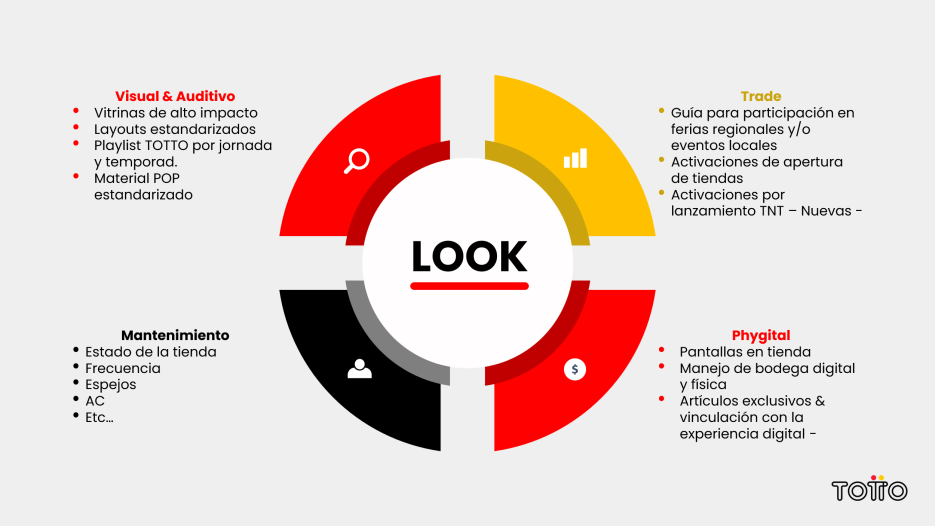
Gestionas la correcta implementación de lineamientos visuales y ambientales. Incluye:
Objetivo: coherencia con la marca y facilitar la lectura del producto por parte del cliente.
Aseguras que la tienda esté en condiciones óptimas. Incluye:
Una tienda descuidada impacta directamente la experiencia y la conversión.
Gestionas la correcta implementación de activaciones comerciales y estrategias de impulso. Incluye:
Tu responsabilidad: iniciativas comerciales visibles, claras y correctamente ejecutadas.
Integra lo físico y lo digital en la experiencia del cliente. Aquí gestionas:
El entorno debe facilitar la interacción, no complicarla.
GPS asegura que tengas el producto correcto, en la cantidad correcta, en el momento correcto. Aquí gestionas disponibilidad, rotación, abastecimiento e inteligencia de surtido: GPS conecta la planeación con la realidad de tu tienda.
Tu rol no es solo recibir producto: es entender cómo el surtido impacta directamente el resultado. Sin producto adecuado, no hay resultado que sostener.
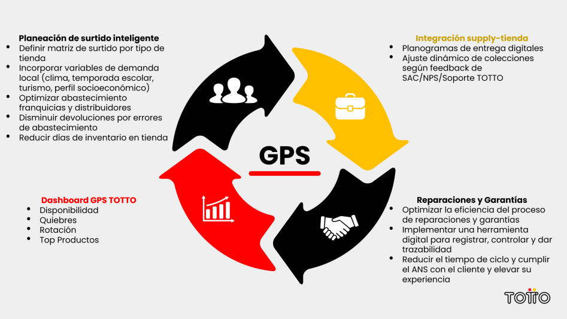
Aquí se define la matriz de surtido según el tipo de tienda. Incluye:
El surtido no debe ser estático: debe responder al comportamiento real del mercado.
La herramienta que te permite visualizar:
Aquí conviertes el inventario en información accionable: no gestionas por percepción, gestionas por datos.
Busca alinear la planeación con la ejecución. Incluye:
El surtido no es solo logístico: es información que retroalimenta el sistema.
Este frente optimiza la eficiencia del proceso postventa. Incluye:
Una mala gestión de garantías impacta directamente la percepción de marca.
No basta con conocer SER, LOOK y GPS: hay que gestionarlos de manera articulada en la operación diaria, con disciplina, coherencia y seguimiento constante.
El gobierno del modelo garantiza que la gestión no sea reactiva, sino direccionada.
Revisar indicadores clave · validar ejecución en piso de venta · identificar alertas tempranas · tomar decisiones correctivas inmediatas.
Analizar tendencias por asesor y por indicador · realizar el feedback estructurado · definir focos de mejora · ejecutar y documentar planes de acción.
Evaluar el desempeño acumulado · identificar patrones recurrentes · ajustar estrategias comerciales · reconocer avances y oportunidades estructurales.
Sin este ritmo, el modelo pierde consistencia. Con disciplina, se convierte en hábito de gestión.
No ejecuta por ti: observa tu gestión, te retroalimenta y vuelve a observar los ajustes. Ese ciclo consolida el hábito de gestión.
El Modelo de Excelencia no es un evento ni un proyecto temporal: es la forma en que gestionas tu tienda de manera estructurada y sostenible.
Si alguno falla de manera recurrente, el modelo requiere mayor disciplina de gestión.
Aplica a todos los representantes de la marca, colaboradores y/o aliados estratégicos en el punto de venta:
Toda información suministrada al cliente debe ser clara, verídica, coherente y precisa en todos los puntos de contacto de la preventa, venta y postventa: el cliente debe poder conocer la funcionalidad, el manejo y los cuidados del producto, y los términos y condiciones del servicio.
Los procesos encargados de la comunicación con el cliente deben mantener el tono de la marca y verificar su publicación con el área jurídica.
Conócelos y compártelos: son los canales oficiales de atención de Nalsani S.A.S.
Si un cliente no puede resolver algo contigo en tienda, nunca lo dejes sin salida: entrégale el canal correcto y el horario en que atiende.
Establece las normas, procedimientos y disposiciones que regulan las relaciones laborales entre la empresa y sus trabajadores: asegura el cumplimiento de las obligaciones legales, promueve un ambiente de trabajo justo y disciplinado, y garantiza la correcta organización de las actividades, derechos y deberes de ambas partes.
Reglamento interno de trabajo.pdf · Intranet/SGEstablece los parámetros para la gestión de asistencia: controla y optimiza la planificación y marcación del tiempo laborado, las jornadas de trabajo, el seguimiento de ausentismos y el pago de trabajo suplementario — para colaboradores contratados directamente en Nalsani S.A.S. y a través de Empresas de Servicios Temporales.
PC-Gestión de asistencia.pdfPromueve un entorno laboral saludable, seguro y propicio. Regula las medidas de prevención de acoso laboral y la participación del Comité de Convivencia como instancia preventiva, protegiendo a los trabajadores frente a los riesgos psicosociales. En cumplimiento de la Ley 1010 de 2006 y la Resolución 3164 de 2025: trato justo, equitativo y sin prejuicios, y cero conductas de acoso, discriminación, persecución u hostigamiento — directas o indirectas.
PC-Prevención de acoso laboral.pdfEn Nalsani S.A.S. reconocemos y valoramos la diversidad de nuestros colaboradores y demás grupos de interés como un activo fundamental para nuestro éxito.
PC-Diversidad e inclusión.pdfEstablece los parámetros para la prevención del acoso sexual y/o discriminación y el manejo de los casos puestos en conocimiento de la compañía por trabajadores, contratistas de prestación de servicios, pasantes, practicantes y demás personas del contexto laboral.
PC-Prevención y manejo de casos de acoso sexual y-o discriminación.pdfEn Nalsani S.A.S. no está permitido realizar ninguna actividad laboral bajo los efectos del alcohol o sustancias psicoactivas, y está prohibido su consumo en las instalaciones y/o antes o durante cualquier actividad organizada por la compañía.
PC-Frente al consumo de tabaco, alcohol y sustancias psicoactivas.pdfLa reputación de Nalsani S.A.S. es el resultado de muchos años de trabajo — y las acciones indebidas de un solo colaborador pueden dañarla. Por eso todos realizamos nuestras actividades guiados por los principios de comportamiento ético del código, y los manifestamos con participación activa en el actuar diario.
Código de ética.pdfNuestro compromiso con los grupos de interés (gobierno corporativo, colaboradores, clientes, proveedores, entes de control, comunidad, aliados, medios, organizaciones y medio ambiente) sobre una actuación ética, responsable y transparente, basada en estos principios:
Para reportar conductas irregulares o posibles actos de corrupción y soborno transnacional — con anonimato, no represalia y gestión oportuna.
Los robos se clasifican en hurtos o atracos según el caso (ver glosario). Estas modalidades y señales te permitirán identificar conductas sospechosas. Modalidades de hurto.pdf
Define una frase que permita alertar sobre una persona sospechosa sin que lo note. Ejemplo: «Tenemos una maleta roja en stock».
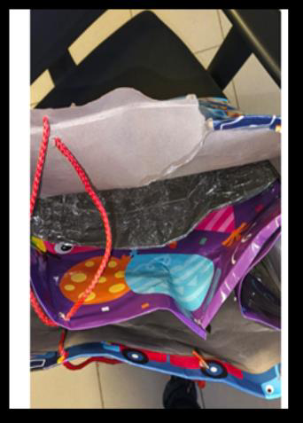
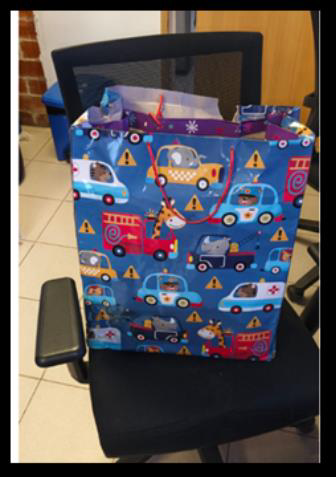
En horas pico, ubica al menos una persona en cada punto crítico (entrada principal, vestieres, módulo de pago y bodega) · Ilumina la tienda al 100% — luces fundidas se reportan a mantenimiento por medio de Aranda · No bajes los tacos eléctricos de seguridad, rack de comunicaciones o internet (se pierde la gestión remota de cámaras y alarmas) · Al cerrar, apaga por completo los equipos del módulo de pago y caja, incluyendo monitores · Si hay sistema de alarma, verifícalo con regularidad.
Comportamientos inusuales, posibles hurtos o infractores → Central de Monitoreo Nalsani:
Notifica también a Seguridad del Centro Comercial, al Director Regional y/o Jefe Comercial. Reporta: infractores reconocidos, suplantadores (clonan tarjetas o cédulas falsas), pérdida de producto e incidentes. Especifica características: vestimenta, si va acompañado y en qué lugar del PDV está. Como líder, socializa con los asesores los registros de infractores que lleguen por WhatsApp y Teams tan pronto te los compartan.
Ten siempre a disposición los medios de comunicación de la compañía (celulares, correos, Teams, botones de pánico y/o sistema de alarma): permiten reaccionar a tiempo ante una novedad. ⛁ MANEJO DE ATRACOS
El tratamiento de los datos se da exclusivamente por NALSANI S.A.S. y sus filiales autorizados por el titular y/o previstas en la ley. Los datos personales — salvo la información pública — no podrán estar disponibles en internet u otros medios de divulgación masiva, salvo acceso técnicamente controlable que brinde conocimiento restringido solo a los titulares o terceros autorizados conforme a la ley.
PC-Política protección de datos personales.pdfEl decálogo resume tu rol: solo lo necesario, claves privadas, MFA obligatorio, cuentas separadas, bloquear y desconectar, información reservada, tu rol cuenta, reporte inmediato a soporte@totto.com, capacítate y desconfía de solicitudes.
PC-Política seguridad de la información 2.pdf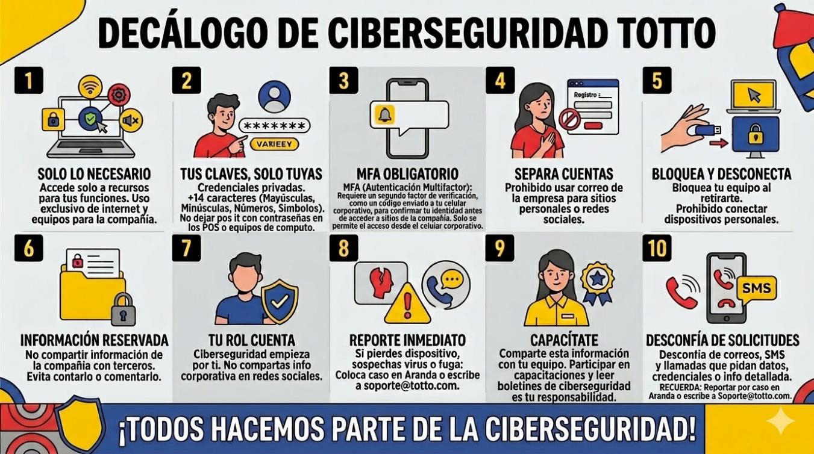
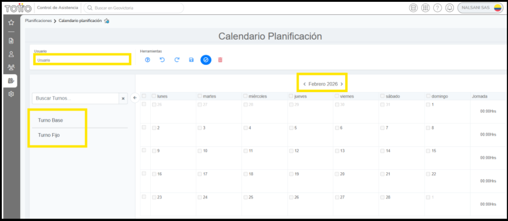
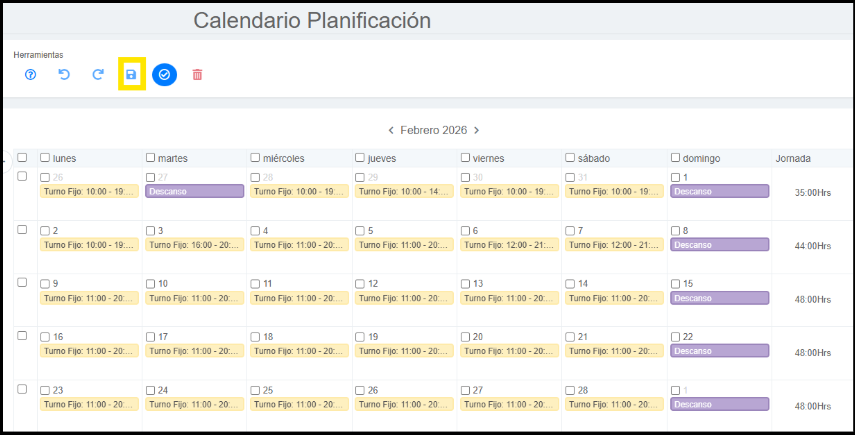
El reporte de gestión de asistencia permite visualizar y administrar toda la información de asistencia de los colaboradores:
Los compensatorios por domingos laborados deben quedar programados así — Turno: Descanso · Permiso: Domingo compensatorio.
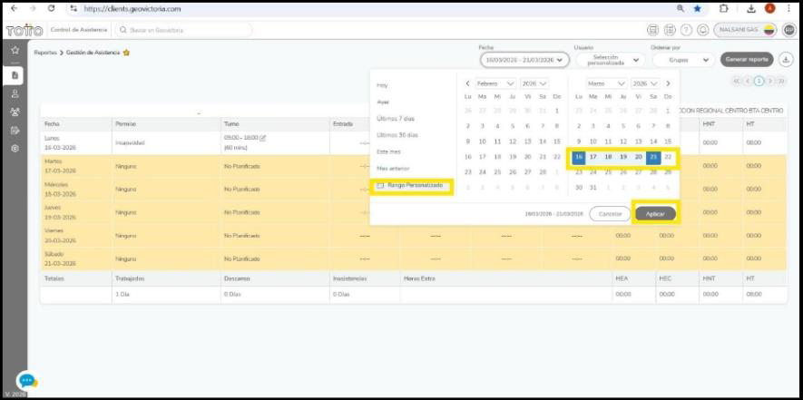
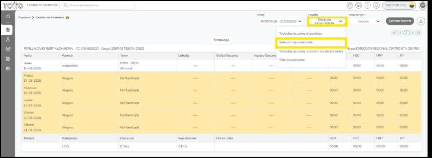
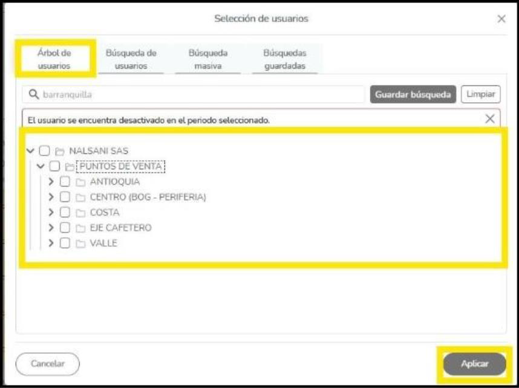
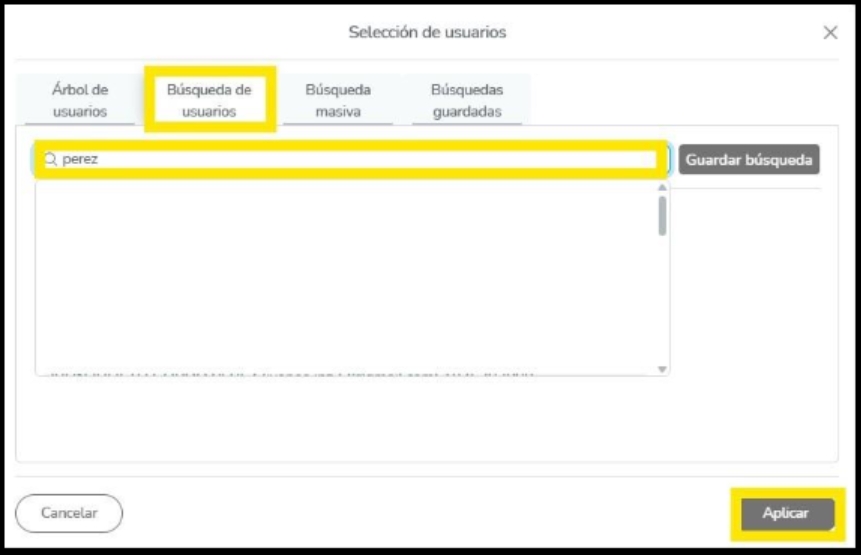
A través del reporte de Gestión de Asistencia puedes modificar turnos de acuerdo con la necesidad del punto de venta:
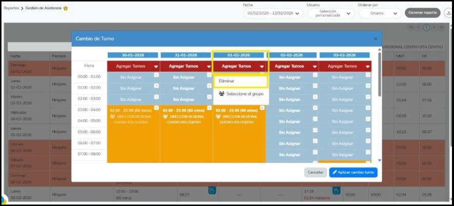
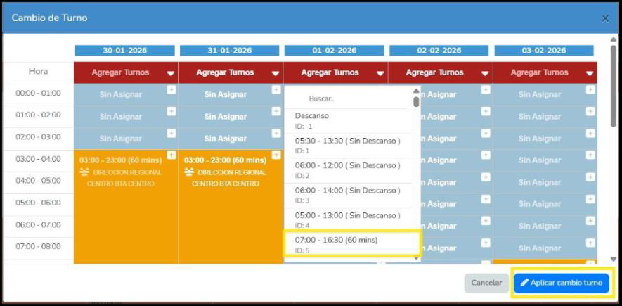
El colaborador puede laborar máximo 2 domingos en el mes. Si el mes tiene 4 o más días festivos, equilibra al equipo para que no todo el equipo labore el total de festivos.
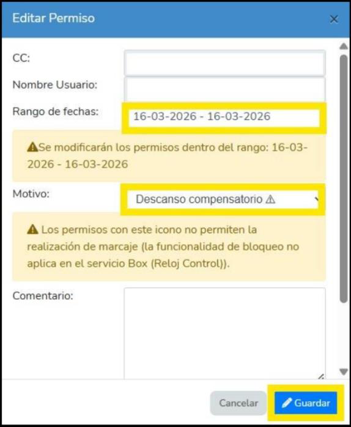
Debe quedar programado así:
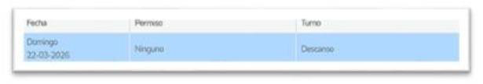
Programa el descanso compensatorio, que debe tomarse en un día hábil:
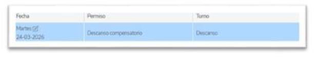
Programa el descanso compensatorio, que debe tomarse en un día hábil:
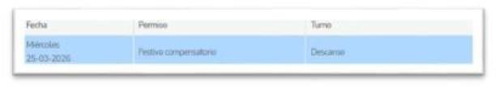
Registro de ausentismos e incapacidades (debe tener programación de turno). Por esta opción se registran ausentismos e incapacidades: 1) selecciona la opción de permisos en Gestión de Asistencia · 2) selecciona el rango de fechas · 3) indica el motivo (ej. Vacaciones) · 4) haz clic en Crear.
Selecciona el rango de fechas en el calendario, indica el motivo Vacaciones y haz clic en + Crear.
Se aplican los mismos pasos de vacaciones; en motivo se busca Incapacidad o la novedad que presente el colaborador.
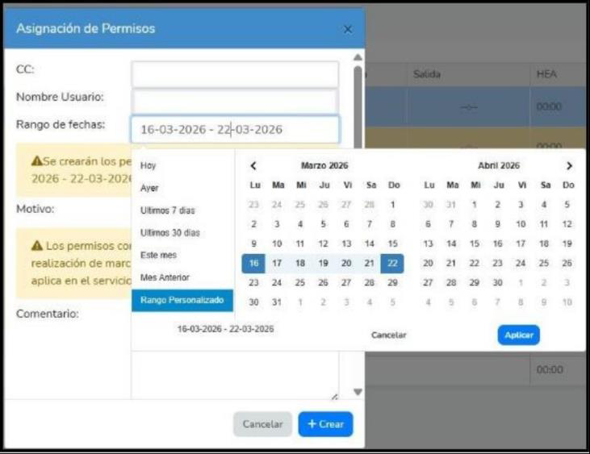
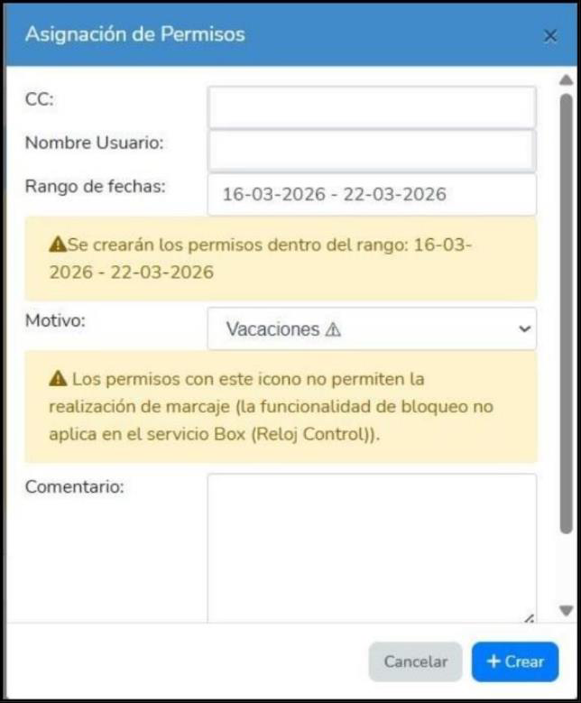
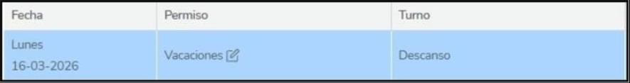
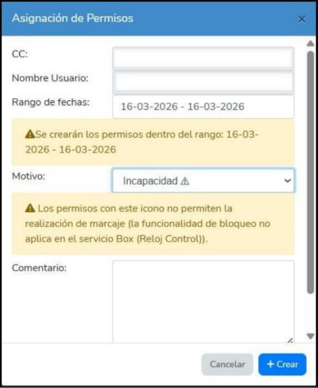
l) Usar de forma permanente y adecuada el uniforme asignado por NALSANI S.A.S. de acuerdo con el cargo, para el desempeño de su labor durante la permanencia en su sitio de trabajo.
76. Usar el uniforme o dotación de la empresa fuera de las instalaciones o para fines diferentes a la labor contratada.
Ningún colaborador nuevo podrá llegar a tiendas sin la asignación del uniforme correspondiente. Si se presenta esta novedad, debe reportarse al área de Relaciones Laborales.
Al ingreso del colaborador a la compañía, el BP (Business Partner) debe realizar la entrega del kit de uniformes a cada colaborador:
Si una prenda del uniforme presenta novedad y requiere reemplazo, el líder de tienda informa la novedad por correo al equipo de Business Partner y al jefe comercial. El equipo BP realiza la asignación, entrega y registro de la prenda entregada en la planilla de control de entrega.
Cada cambio de temporada la compañía entrega un nuevo kit por colaborador. El BP levanta las tallas; Relaciones Laborales entrega el pedido total; el BP entrega los kits según tallas y cargo, con registro de entrega (el colaborador firma un acta con cantidad, tipo de prenda y fecha). El BP explica el uso correcto, cuidado y normas de presentación personal alineadas a la imagen de marca. Cualquier novedad se reporta al equipo BP para su ajuste y solución.
Higiene impecable en dientes, pelo, uñas, ropa y zapatos, entre otros.
Limpias; si usas esmalte, tonos neutros y acabado intacto.
Limpio y bien peinado. Si es recogido, usa un accesorio para tal fin (evita colocarte esferos).
Estilo natural y sobrio.
Bien afeitados; si tienen barba o bigote, bien cuidados.
Joyería y complementos sobrios, sin piezas excesivamente llamativas. No se permite el uso de bufandas, gorras, sombreros o guantes.
Si no has recibido la dotación: jean clásico azul oscuro o negro, sin rotos ni desgastes.
De color neutro, sin estampados.
Oscuros, limpios y en buen estado.
Uso moderado de lociones o perfumes con aromas neutros y discretos.
Espejo antes de salir de casa: ¿me veo como la marca que represento?
Si la respuesta es sí, estás listo.